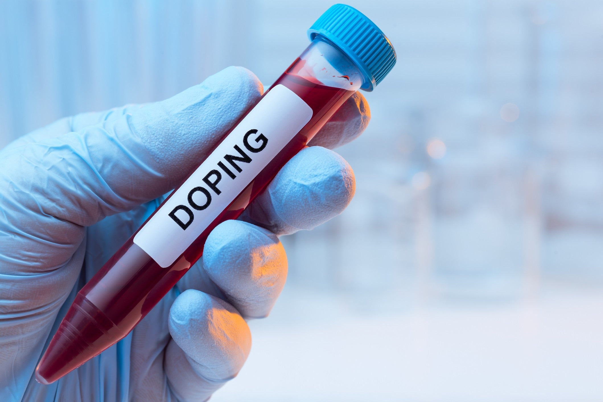
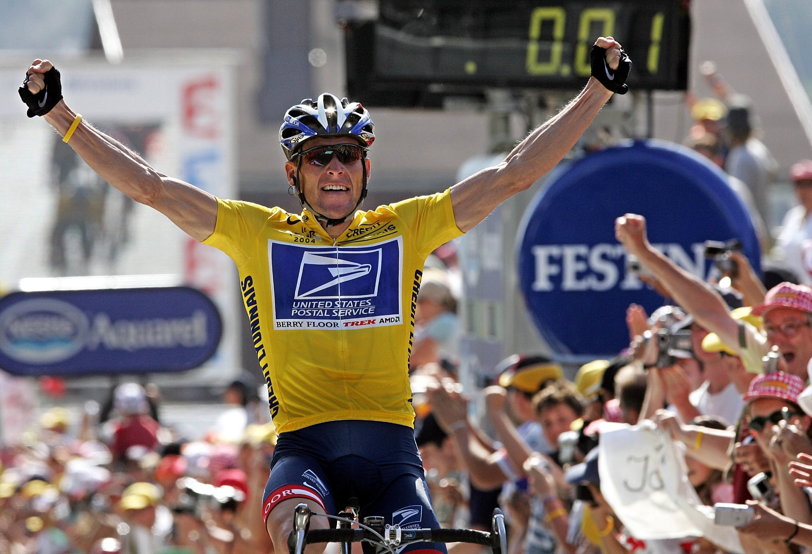
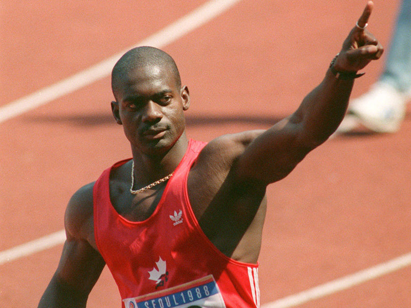
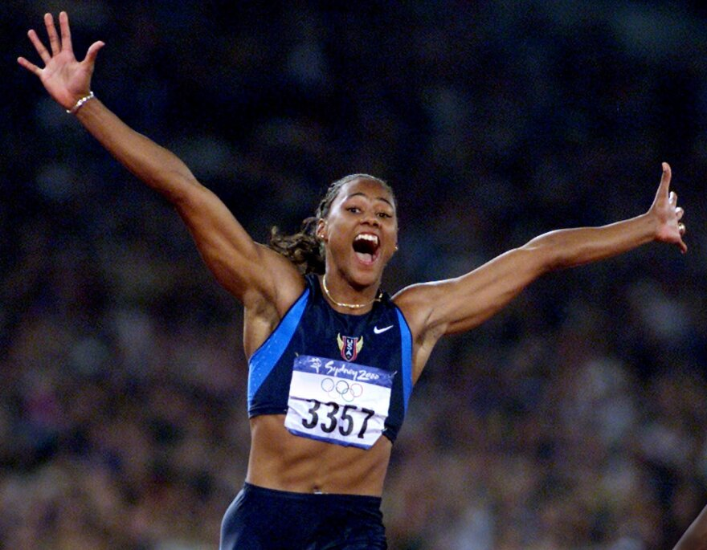
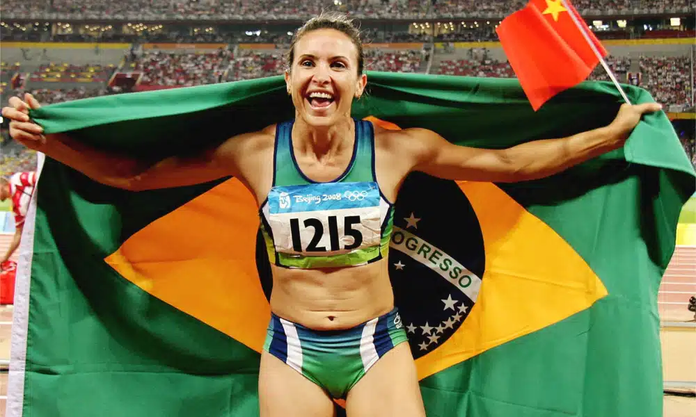
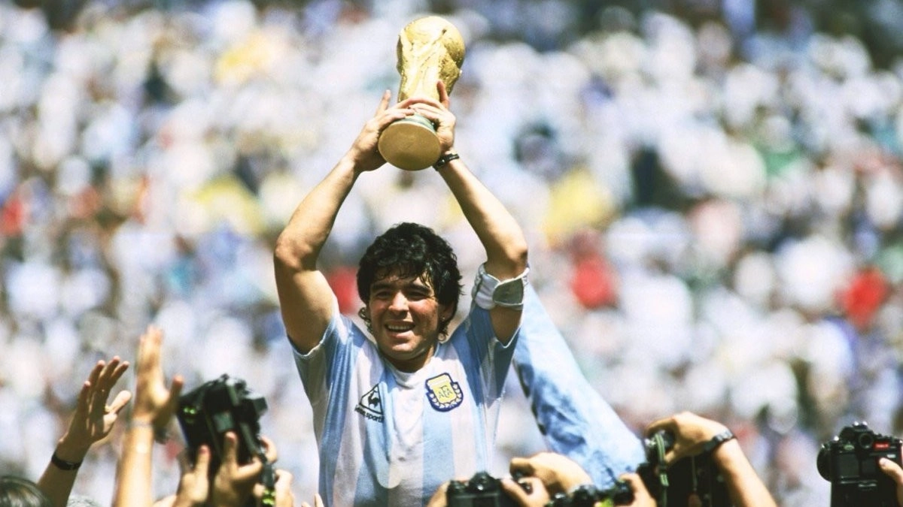
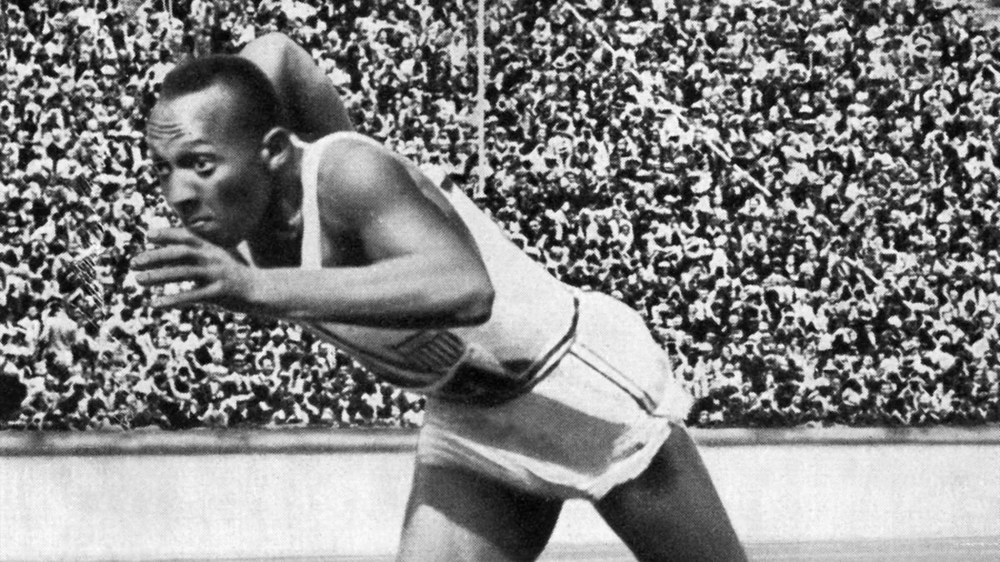
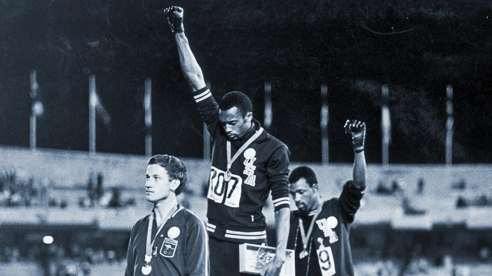
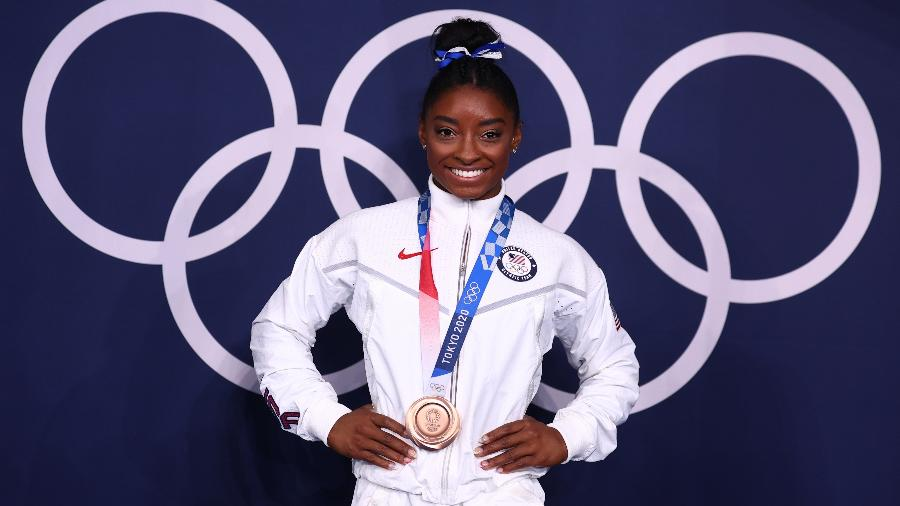

Controle Antidoping na Copa do Mundo
Uma análise química e social sobre a integridade no esporte
Bem-vindo ao portal oficial da nossa pesquisa de Química. Este site foi desenvolvido para explorar a complexa relação entre as substâncias químicas proibidas, a pressão do maior evento esportivo do mundo e a busca incessante por integridade e Fair Play.
Navegue pelos menus acima para explorar todos os tópicos da nossa pesquisa.
Equipe de Pesquisa
Este trabalho é fruto da colaboração dedicada dos integrantes:
- ✔ Paulo Henrique
- ✔ Arthur Sanches
- ✔ Enzo Carrasco
- ✔ Raphael Yehud Brito
- ✔ Raphael Lima
- ✔ Miguel Henrique
- ✔ Felipe Ortiz
- ✔ Prof. Kaio Maciel
O que é Doping?
Responsável: Enzo

Definição Químico-Legal
Doping refere-se ao uso de substâncias proibidas — como substâncias sintéticas, hormônios, esteroides anabolizantes, estimulantes, diuréticos e narcóticos — ou métodos ilegalmente destinados a aumentar o desempenho esportivo. Ocorre quando atletas violam as regras estabelecidas pela Agência Mundial Antidopagem (WADA).

O Exame Antidoping
A fiscalização é rigorosa. O exame consiste na coleta de amostras de fluido corporal (geralmente urina ou sangue) dos atletas, selecionados aleatoriamente ou por critérios específicos. Estas amostras são enviadas a laboratórios credenciados pela WADA para análise espectrométrica e cromatográfica.
Objetivos do Uso de Substâncias
Por que é Proibido?
Ética e Justiça (Fair Play): Viola o princípio fundamental da competição justa, tornando a disputa desigual.
Riscos à Saúde: O uso de tais substâncias pode causar danos irreversíveis, como infarto, arritmia cardíaca, câncer hepático, dependência química, distúrbios psiquiátricos e até morte súbita.
Integridade do Esporte: Prejudica o espírito esportivo e os valores da educação física.
Casos Paradigmáticos
A evolução da fiscalização através de exemplos históricos
| Atleta | Modalidade / Contexto | Consequências / Lição |
|---|---|---|
|
 |
Ciclismo | Perdeu seus sete títulos do Tour de France após a descoberta de um esquema sistemático de dopagem que durou anos. Um dos maiores escândalos da história. |
|
 |
Atletismo (100m) | Perdeu a medalha de ouro olímpica em Seul 1988 após testar positivo para esteroides anabolizantes logo após a vitória. |
|
 |
Atletismo | Devolveu cinco medalhas olímpicas (três de ouro) conquistadas em Sydney 2000 após admitir o uso de substâncias proibidas e mentir para investigadores federais. |
|
 |
Salto em Distância | Suspensa em 2003 devido a um exame positivo para clostebol (atribuído a um creme cicatrizante). Superou a barreira legal e conquistou o ouro olímpico em Pequim 2008. |
|
 |
Futebol | Suspenso por 15 meses em 1991 após exame positivo para efedrina na Copa América, ficando fora de competições internacionais. |
Injustiças e Barreiras Sociais
O esporte como espelho das lutas e superações da sociedade

Racismo e Superação
Jesse Owens: Conquistou quatro ouros olímpicos em Berlim 1936, confrontando o preconceito racial e a ideologia de supremacia nazista em pleno regime de Hitler.

Protestos Políticos
Tommie Smith e John Carlos: Foram punidos e expulsos dos Jogos do México 1968 por realizarem a saudação do "Black Power" no pódio contra o racismo nos EUA.

Saúde Mental no Esporte
Simone Biles: Destacou a importância crítica da saúde mental ao priorizar seu bem-estar sobre as competições olímpicas de Tóquio 2020, quebrando tabus no alto rendimento.
Falhas Técnicas e Tecnologia: O esporte também lida com injustiças técnicas. Erros de arbitragem levaram à implementação de tecnologias como o VAR (Video Assistant Referee) nas Copas do Mundo.
A Importância da Justiça Esportiva
Garantindo a credibilidade e o futuro do esporte
A justiça é fundamental para garantir a credibilidade do esporte. Sem fiscalização rigorosa e Fair Play, o público perde a confiança nos resultados, e atletas honestos são severamente prejudicados. O esporte não é apenas competição; ele promove valores essenciais como disciplina, respeito e trabalho em equipe.
O respeito às regras permite que o esporte inspire futuras gerações através da integridade.
Referências Consultadas: MKT Esportivo